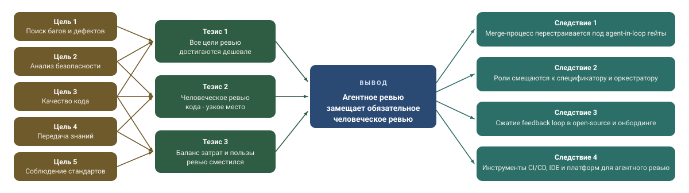

Аннотация
Кодинг-агенты - это автономные системы на основе больших языковых моделей (LLM), способные читать, писать, тестировать и исправлять программное обеспечение. Автор утверждает, что кодинг-агенты достигли порога возможностей, при котором традиционное человеческое код-ревью больше не является необходимым компонентом конвейера обеспечения качества.
Аргумент опирается на два утверждения: каждая заявленная цель код-ревью может быть достигнута агентами при меньших затратах и большей пропускной способности; наивная интеграция, при которой агенты пишут код, а люди остаются обязательными ревьюерами, - тупик, поскольку она не даёт значимой гарантии качества и не масштабируется с ростом производительности, обеспечиваемой ИИ.
I. Введение
Код-ревью является доминирующим человеческим механизмом контроля качества в современной разработке ПО. После исследований Bacchelli и Bird в Microsoft и Sadowski с соавторами в Google область пришла к пониманию, что код-ревью служит четырём пересекающимся целям: обнаружение дефектов до продакшена, соблюдение стиля и соглашений, передача знаний между участниками команды и формирование общего понимания развивающейся кодовой базы. Ни одна серьёзная команда не отказывается от него.
Однако код-ревью несёт значительные издержки, которые часто недооцениваются. Разработчики в крупных организациях тратят от 10 до 15% рабочего времени на чтение и комментирование чужого кода. Задержка между отправкой pull request (запроса на слияние) и получением полезного фидбэка регулярно превышает 24 часа и может растягиваться на дни, создавая структурное торможение для continuous delivery (непрерывной поставки). Помимо временных затрат, ревью создаёт социальное напряжение: эскалации тона, предвзятость по статусу и тенденцию новичков покидать проекты после критических замечаний.
Системы на базе LLM, такие как Veai, Claude Code, Codex и GitHub Copilot, теперь могутВ этой статье выдвигается сильное утверждение: кодинг-агенты достигли уровня, при котором человеческое код-ревью становится избыточным и должно быть заменено проверкой, выполняемой агентами.
Основные утверждения
Утверждение 1. Все цели код-ревью могут быть достигнуты агентами дешевле и быстрее.
Утверждение 2. Комбинация «ИИ пишет код - человек ревьюит» нестабильна и превращает ревью в узкое место.
Утверждение 3. Баланс затрат и пользы уже сместился: человеческое ревью больше не окупается для типичных изменений.
1. Агенты закрывают все цели ревью
Поиск дефектов. Люди хорошо находят поверхностные ошибки, но плохо - сложные логические баги. Агенты могут анализировать весь код, тесты и историю изменений одновременно.
Стиль и стандарты. Уже автоматизированы линтерами; агенты добавляют семантический уровень - именование, API, документацию.
Безопасность. Агенты системно перечисляют классы уязвимостей лучше, чем человек в ad-hoc ревью (нерегламентированной проверке).
Передача знаний. Агенты могут генерировать объяснения и документацию по запросу - это масштабируемее, чем комментарии коллег.
2. Человеческое ревью поверх ИИ - тупик
Не даёт реальной гарантии. Человек не способен эффективно проверить большой объём сгенерированного ИИ кода с тонкими ошибками, и ревью превращается в формальность.
Не масштабируется. ИИ увеличивает количество pull request, а пропускная способность людей остаётся прежней, и образуется узкое место (bottleneck).
Логичный шаг - замкнуть цикл: агент проверяет код, а человек подключается только при рисках или неопределённости.
3. Экономика уже изменилась
Стоимость ревью - это 10-15% времени разработчиков плюс задержки в поставке. Польза же уменьшается по мере роста качества агентов. В результате предельная ценность человеческого ревью оказывается ниже его стоимости.
Агентное ревью, напротив, мгновенно, детерминированно и аудируемо: его результат можно воспроизвести и проверить.
Последствия
Процессы. Переход от человеческого approval (одобрения) к agent-driven gating - управляемым агентом гейтам, где CI становится основным контролем.
Роли. Разработчик становится «спецификатором и оркестратором», а не ревьюером строк кода.
Open source. Ускорение feedback loop (цикла обратной связи) и снижение нагрузки на мейнтейнеров как узкое место.
Инструменты. CI/CD, IDE и платформы должны нативно поддерживать агентное ревью.
Вывод
Код-ревью было фундаментальной практикой 50 лет, но это больше не обязательный элемент. Оно смещается в область высокорисковых решений - архитектуры, безопасности, регулирования, - тогда как для большинства изменений достаточно агентной проверки.
Конец код-ревью - это начало более продуктивного способа разработки ПО.
Код-ревью действительно меняется, но слепо заменить человека ещё одним LLM-комментарием - плохая сделка.
Будущее ревью не в том, что агент пишет ещё один убедительный текст, а в том, что он приносит проверяемые факты: сборка прошла, тест упал, зависимость сломалась, путь выполнения подтверждён. Veai делает ревью доказательным, потому что работает поверх JetBrains IDE и опирается на реальные проверки проекта, а не на правдоподобный текст модели.